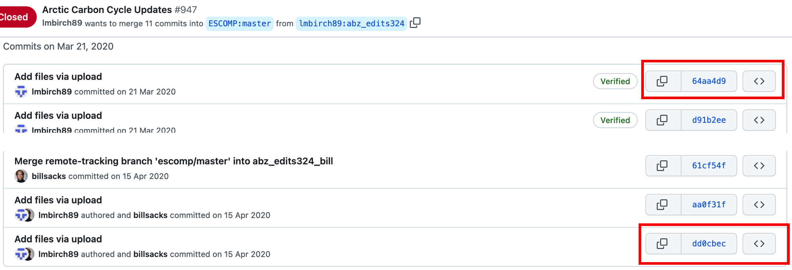
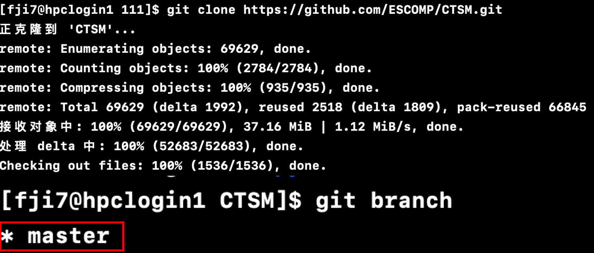
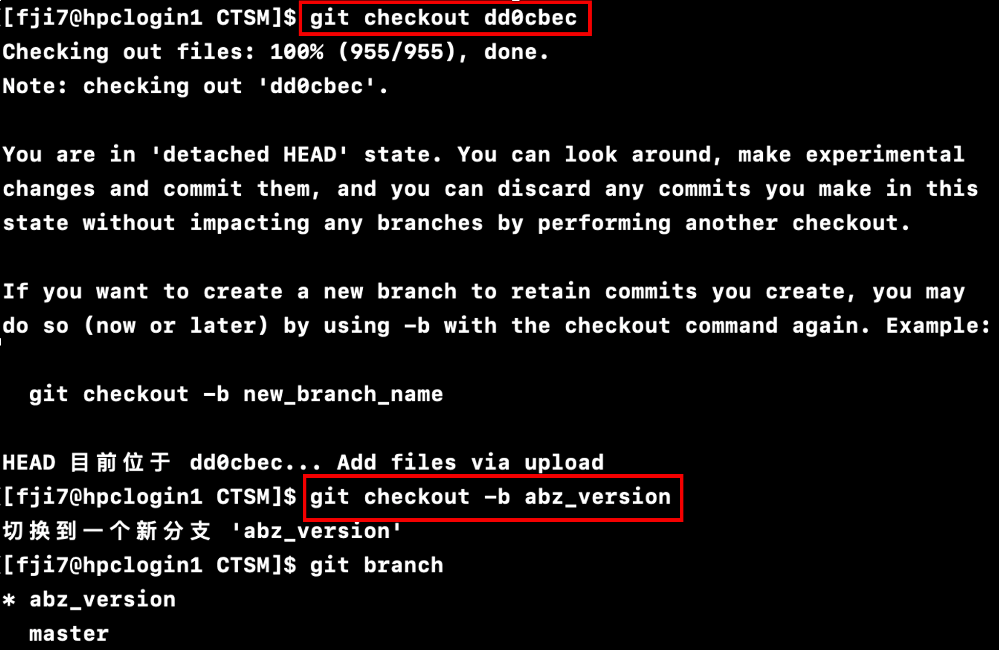
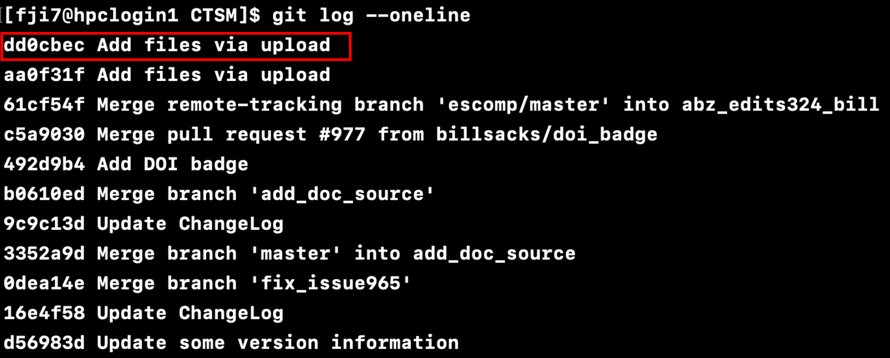
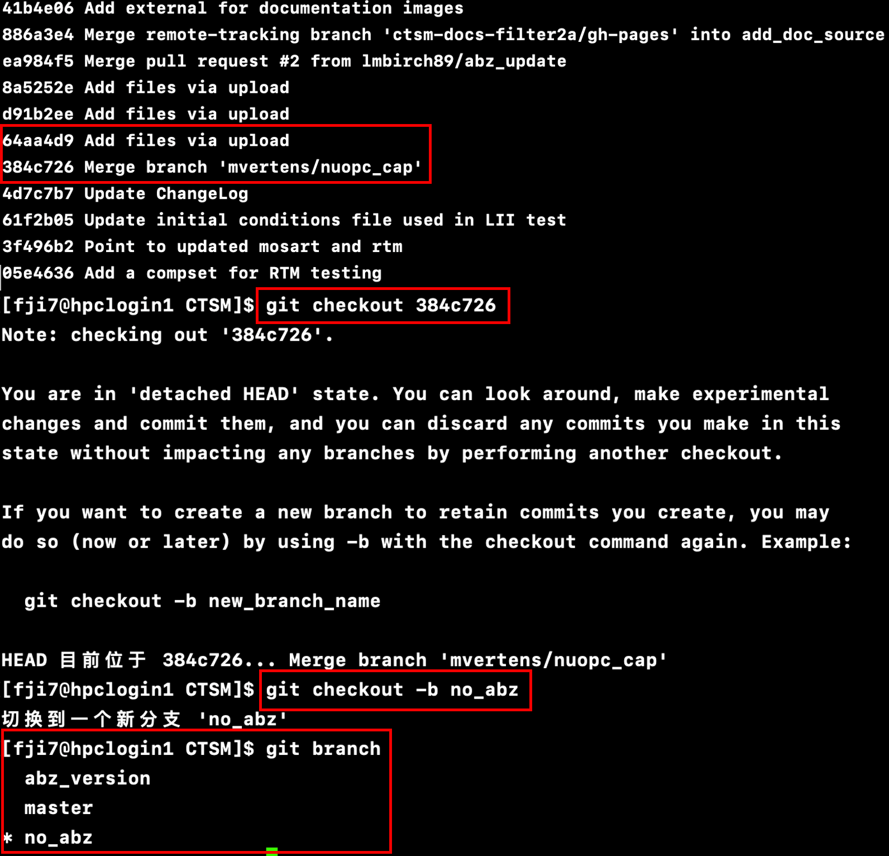

Step 1: Open the terminal → Check if SSH exists on your Mac by entering the
command cd ~/.ssh → If it doesn't exist, create an SSH key by running
ssh-keygen -t rsa -C xxxxx@163.com (replace xxxxx@163.com with the email you used when
registering on GitHub) → It will prompt you to choose the storage location for the SSH key. Press
Enter to use the default location and follow the prompts to complete the process by entering 'y'
when prompted for confirmation. → Finally, set a password for the SSH key. Enter a password, confirm
it, and the SSH key creation process will be completed.
Step 2:ssh -T git@github.com is used to test the SSH connection
between your local machine and GitHub. It verifies if your SSH key is associated with your GitHub
account.
Step 3: Upload files from local to Github.
git clone https://github.com/xxx.git (address of repository in your own Github).
Navigate to the local folder: Open the terminal and use the cd command to
navigate to the local folder where you want to upload the files (Or create a new file that you
want to upload using touch README.md).
git add filename.txt (add a specific file) Or git add . (add all the
files in the folder).
git commit -m “first version(Description of the commit)”
git merge bname, merge changes on the bname branch into the current branch.
git branch -D bname, delete the branch named bname.
Large files uploading to github:
Step 1: Navigate to the Directory: Open your terminal or command prompt and
navigate to the directory containing the large file you want to upload.
Step 2: Initialize Git LFS: If you haven't already initialized Git LFS for your
repository, you can do so by running:
git lfs install
Step 3: Track Large File: Track the large file using Git LFS. You need to specify
the relative path to the file from the root directory of your repository. For example, if the large
file is located in a subdirectory named "data" and its filename is "large _file.zip", you can run:
git lfs track data/large _file.zip
Step 4: Add and Commit Large File: Add the large file to the staging area and
commit it to your local repository as you normally would:
git add .gitattributes
git commit -m "Track large files with Git LFS"
git add data/large _file.zip
git commit -m "Add large file using Git LFS"
Step 5: Push Changes to GitHub: Once you've committed the changes locally, you
can
push them to your GitHub repository:
git push origin main
Step 6: Verify Large File in GitHub: After pushing the changes, verify that the
large file is properly stored using Git LFS in your GitHub repository.
Step 7: Download Large File from Github: Clone this repository to your local PC
and
navigate to the directory and download the data from github LFS:
Step 1: In the Arctic Carbon Cycle Updates Request of CLM, we can see the first
commit is 64aa4d9, the last commit is dd0cbec. Therefore, the commits of dd0cbec is the abz
version of CLM, and the commit before 64aa4d9 is the
version without abz updates.

Arctic Carbon Cycle Updates Request of CLM in github
repository.
Step 2:git clone ****, download the CLM to the location you want.
Then, cd CTSM and use git branch, we can see this version is pointing to
the master branch.

Clone repository.
Step 3: Now, to get the arctic carbon cycle updates version of CLM, using command
line git checkout dd0cbec. Then, git checkout -b abz_version (build a new
branch named abz_version). And git log --oneline, you can see the last commit is
pointing at dd0cbec, which is the last commit of abz.


Get the updated version of CLM.
Step 4: The first commit of abz updates is 64aa4d9, which means the commit before 64aa4d9 is the version without abz updates, namely 384c726. So, we can git checkout 384c726 to
transfer the current version before abz updates. Then git branch -b no_abz (build a
branch before abz updates).
Step 5: Finally, git branch, we can see there are three branches
(master, abz_updates, no_abz).

Finalize the extracted branches with different versions
of CLM.